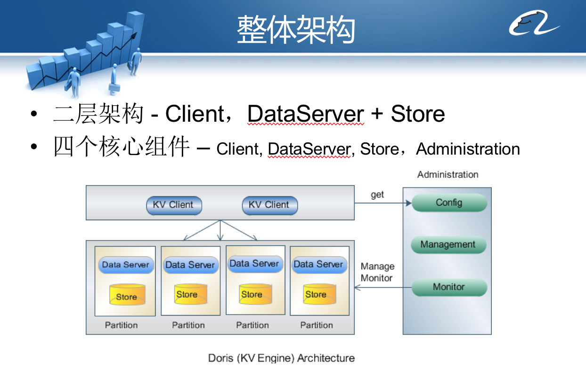
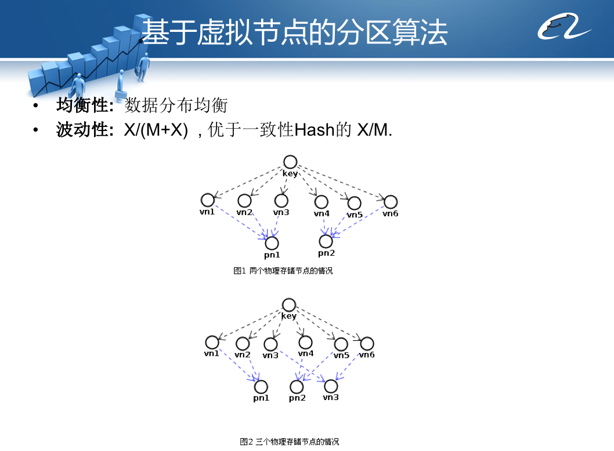
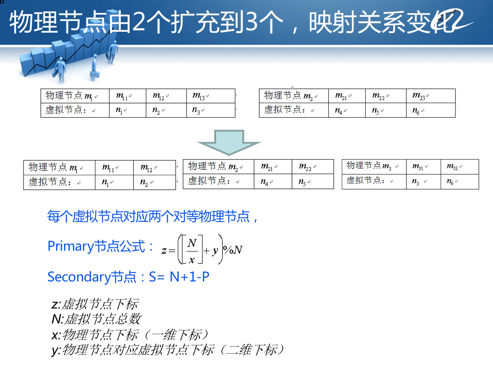
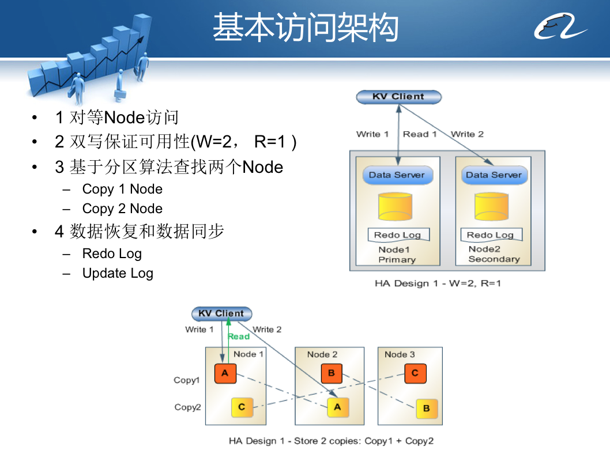
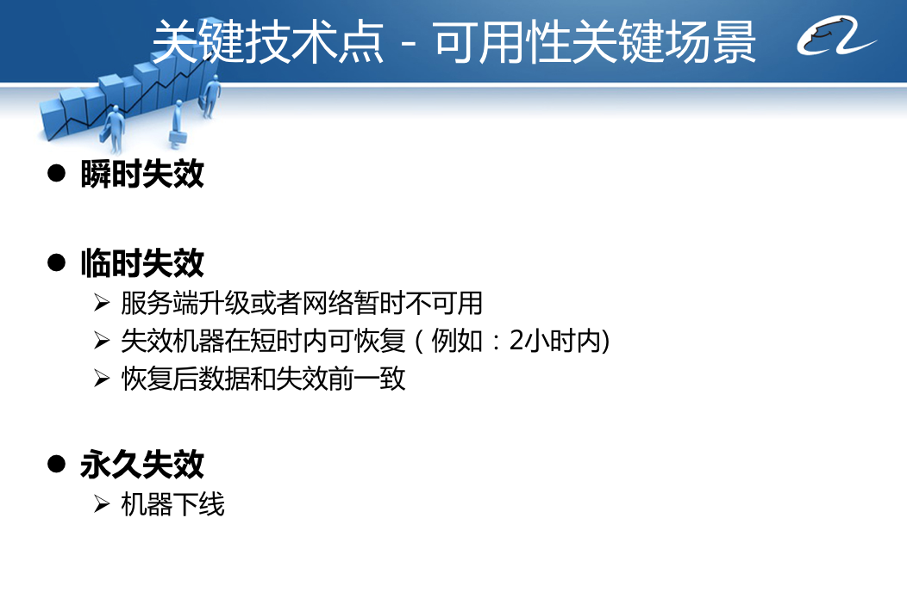
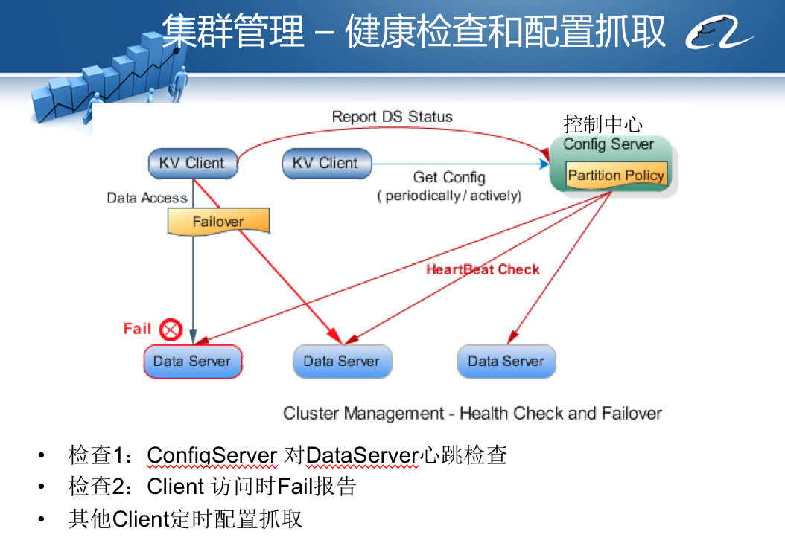
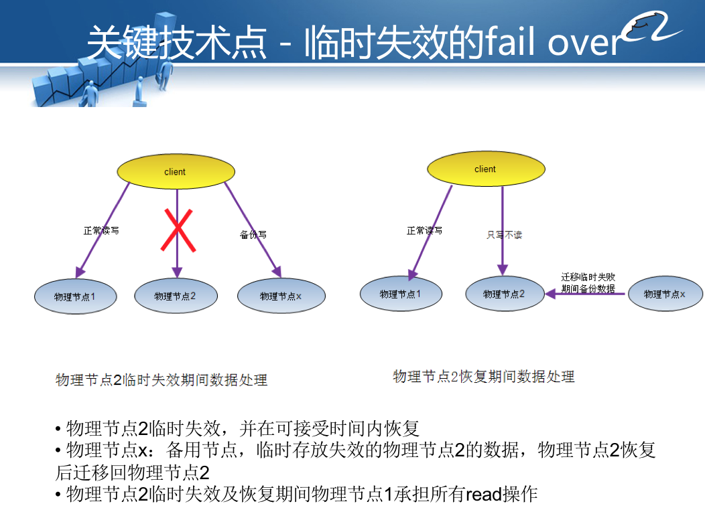
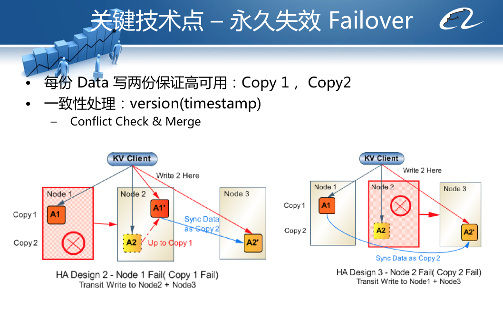
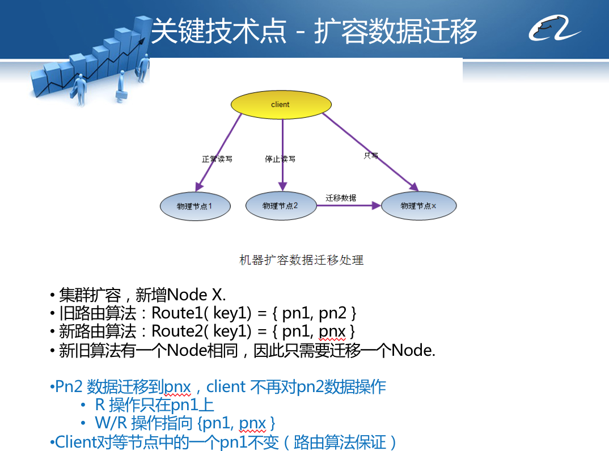

- 00 开篇词 为什么说每个软件工程师都应该懂大数据技术？.md.html
- 01 大数据技术发展史：大数据的前世今生.md.html
- 02 大数据应用发展史：从搜索引擎到人工智能.md.html
- 03 大数据应用领域：数据驱动一切.md.html
- 04 移动计算比移动数据更划算.md.html
- 05 从RAID看垂直伸缩到水平伸缩的演化.md.html
- 06 新技术层出不穷，HDFS依然是存储的王者.md.html
- 07 为什么说MapReduce既是编程模型又是计算框架？.md.html
- 08 MapReduce如何让数据完成一次旅行？.md.html
- 09 为什么我们管Yarn叫作资源调度框架？.md.html
- 10 模块答疑：我们能从Hadoop学到什么？.md.html
- 11 Hive是如何让MapReduce实现SQL操作的？.md.html
- 12 我们并没有觉得MapReduce速度慢，直到Spark出现.md.html
- 13 同样的本质，为何Spark可以更高效？.md.html
- 14 BigTable的开源实现：HBase.md.html
- 15 流式计算的代表：Storm、Flink、Spark Streaming.md.html
- 16 ZooKeeper是如何保证数据一致性的？.md.html
- 17 模块答疑：这么多技术，到底都能用在什么场景里？.md.html
- 18 如何自己开发一个大数据SQL引擎？.md.html
- 19 Spark的性能优化案例分析（上）.md.html
- 20 Spark的性能优化案例分析（下）.md.html
- 21 从阿里内部产品看海量数据处理系统的设计（上）：Doris的立项.md.html
- 22 从阿里内部产品看海量数据处理系统的设计（下）：架构与创新.md.html
- 23 大数据基准测试可以带来什么好处？.md.html
- 24 从大数据性能测试工具Dew看如何快速开发大数据系统.md.html
- 25 模块答疑：我能从大厂的大数据开发实践中学到什么？.md.html
- 26 互联网产品 + 大数据产品 = 大数据平台.md.html
- 27 大数据从哪里来？.md.html
- 28 知名大厂如何搭建大数据平台？.md.html
- 29 盘点可供中小企业参考的商业大数据平台.md.html
- 30 当大数据遇上物联网.md.html
- 31 模块答疑：为什么大数据平台至关重要？.md.html
- 32 互联网运营数据指标与可视化监控.md.html
- 33 一个电商网站订单下降的数据分析案例.md.html
- 34 A_B测试与灰度发布必知必会.md.html
- 35 如何利用大数据成为“增长黑客”？.md.html
- 36 模块答疑：为什么说数据驱动运营？.md.html
- 37 如何对数据进行分类和预测？.md.html
- 38 如何发掘数据之间的关系？.md.html
- 39 如何预测用户的喜好？.md.html
- 40 机器学习的数学原理是什么？.md.html
- 41 从感知机到神经网络算法.md.html
- 42 模块答疑：软件工程师如何进入人工智能领域？.md.html
- 所有的不确定都是机会——智慧写给你的新年寄语.md.html
- 第2季回归丨大数据之后，让我们回归后端.md.html
- 结束语 未来的你，有无限可能.md.html
- 捐赠
22 从阿里内部产品看海量数据处理系统的设计（下）：架构与创新
上一期，Doris提出了目前阿里巴巴海量KV存储方面的问题，给出了Doris的业务价值、设计目标和技术指标。但是Doris项目组还必须证明自己有已经经过论证的架构技术方案，可以实现前面设定的目标，立项后可以迅速启动执行，不需要再去摸索尝试，风险可以把控。
因此，PPT后面的内容主要就是阐述Doris的架构方案和创新设计。

Doris是一种支持Key、Value数据结构的分布式存储系统，核心要解决的问题是分布式路由、分布式集群伸缩、分布式数据冗余与失效转移。所以Doris把分布式存储系统很重要的一块，也就是数据存储部分转移出去，使用第三方软件完成，当时选择Berkeley DB作为Doris的底层存储Store，Doris自己专注于分布式技术实现。
Doris的主要访问模型是，应用程序KV Client启动后，连接控制中心Administration，从控制中心获得整个Doris集群的服务器部署信息及路由算法，Client使用Key作为参数进行路由计算，计算得到集群中某些服务器作为当前Key、Value数据存储的服务器节点；然后KV Client使用自定义的通信协议将数据和命令传输给服务器上的Data Server组件，DataServer再调用本地的Berkeley DB将数据存储到本地磁盘。
Doris的核心技术就是这个架构模型上创新性地实现了自己独特的分区路由算法、失效转移策略、集群伸缩设计方案。并在项目开发过程中，将这个三个技术创新申请了技术专利。下面我们重点看下这三个技术创新。
分区路由算法

Doris采用一种基于虚拟节点的分区路由算法，Key使用余数Hash算法计算得到虚拟节点下标。
虚拟节点下标 = hash(md5(key)) mod 虚拟节点个数
虚拟节点和物理服务器节点之间计算建立一个映射关系，通过映射关系查找实际要访问的物理服务器IP地址。
路由算法在初始化的时候就预先设立一个较大的数字，比如100000，当存储服务器集群需要伸缩的时候，要增加一个服务器，虚拟节点和下标计算算法不变，仅仅调整虚拟节点和物理服务器节点的映射关系就可以了，如PPT中图2所示。
这种基于虚拟节点的分区路由算法相对于传统的一致性Hash路由算法，可以获得更好的数据负载均衡，即数据在各个服务器上的存储分布更加均衡。在集群伸缩、增加服务器的时候可以做到更少迁移数据。在实践中，这种算法的一个更大优势是，如果将物理存储的文件系统和虚拟节点关联，即一个虚拟节点对应一个物理存储文件，那么当集群扩容，进行数据迁移的时候，就可以以文件为单位进行数据拷贝，这样迁移速度和运维成本都非常低。
这个基于虚拟节点的分区路由算法的关键难点是，如何计算虚拟节点与物理节点的映射关系，特别是在增加服务器的时候，如何重新计算这个映射关系，使新的映射关系依然处于负载均衡的状态，也就是每个物理节点映射的虚拟节点个数差不太多相同。

项目组抽象了一个数学公式完成映射关系的计算，你可以看上面PPT示例。
失效转移策略
在前面在技术指标上，曾经承诺Doris的可用性为99.997%，保证数据可用性的策略主要是数据存储冗余备份和数据访问失效转移。
我们先看下Doris如何实现冗余备份。

Doris将存储服务器集群分成多个group（默认情况下为2个group），数据写操作的时候，根据分区路由算法，在每个group里计算一个服务器地址，异步并发同时向多个group的服务器上写入数据，以此保证数据有多个备份。

当KV Client访问某台服务器失败的时候，Doris会启动失效转移策略。具体来说，Doris将失效分为三种情况：瞬时失效、临时失效、永久失效，不同情况采用不同的失效转移策略。

当第一次不能访问服务器的时候，Doris认为这是瞬时失效，会进行访问重试，如果三次重试后仍然失败，就会把失败信息提交给控制中心。控制中心检测该服务器心跳是否正常，并进行尝试访问，如果访问失败，就将该服务器标记为临时失效，并通知所有KV Client应用程序。

KV Client应用程序收到服务器失效通知的时候，启动临时失效策略，将原本需要写入到失效节点（图中的物理节点2）的数据写入临时日志节点（图中的物理节点X），而读操作则只访问正常的物理节点1。
当临时失效节点2恢复正常运行，系统会将失效期间写入临时日志节点X的数据合并恢复到物理节点2，这段时间物理节点2只提供写服务，不提供读服务。当所有数据恢复完毕，集群访问恢复正常。

而对于永久失效的节点，需要添加新的服务器以代替下线的服务器，基本策略就是将另一个group正常使用的服务器数据拷贝到新添加的服务器上即可。
需要说明的是，上述三种失效转移过程，除了服务器永久失效后，需要工程师手动添加服务器，并到控制中心添加新服务器配置、激活启用外，其他情况不需要任何人工干预，全部自动化完成。
集群伸缩设计
分布式系统的一个重要设计目标是集群弹性可伸缩，如果当前的服务器数目不能满足业务的负载压力要求，那么就添加更多的服务器去增强处理能力。对于分布式数据存储服务器的伸缩性扩容而言，必然伴随着数据的迁移，就是将原先服务器中的部分数据迁移到新的服务器上。

具体过程为：
1.向集群中一个分组group添加新的物理服务器，部署并启动Doris服务器进程。
2.将这个group的所有服务器设置为临时失效。
3.使用路由算法重新计算加入服务器后的虚拟节点分布，并把需要迁移的虚拟节点对应的物理文件拷贝到新服务器上。
4.设置group所有服务器临时失效恢复，将扩容期间的数据更新写回到这些服务器。
至此，PPT最前面提出的设计目标，经过一系列的关键技术设计分析，证明是技术是可行的，风险是可控的，可以启动开发了。
实际上当时项目组大概花了半年的时间开发Doris系统，部署上线以后，阿里巴巴多个业务产品接入Doris，并在极少运维的情况下，无故障运行了数年。后来服务器集群经过几次扩容，规模达到数百台服务器，实践证明当时的设计是经得起考验的。
最后，我想再说一下关于专利的事。公司一般都是希望能够申请更多的技术专利，这样在跟其他公司进行专利大战的时候才能做到“手中有枪，心中不慌”，特别是在遇到“专利流氓”的时候。所以大部分公司对工程师申请技术专利都比较支持。
大一点的公司法务部门通常会有专门的知识产权律师，他们会帮助工程师申请技术专利，工程师只要按照一般写技术文档的写法写一个技术交底书给公司律师，律师审核后会让专门的专利代理公司帮助编写专门的技术专利申请书，所以工程师申请专利的工作量并不大。
很多公司为了支持申请技术专利，会有很多奖励，比如申请成功一个专利会有几万的奖励，这对于工程师也是一笔不错的收入。做技术的同学可以关注下自己公司的专利奖励政策，如果还没有相关的专利奖励，正好你也可以借此机会说服公司管理层在这方面增加一些激励，这是一件利国家、利公司、利自己的好事。
小结
分布式数据存储系统是分布式系统中最有技术挑战的领域之一。其他的各种分布式系统，由于对数据的一致性和系统的可用性要求并没有那么高 ，所以技术难度和挑战相对没有分布式存储系统这么高。自己参与设计、开发这样的系统，会对分布式系统，乃至大数据系统有更深刻地理解，希望这两期专栏能引导你从开发者的视角，看待分布式大数据系统是如何设计开发出来的，从而对大数据技术有新的认识和领悟。
如果你在工作中遇到有技术挑战的项目，可以尽量找机会去参与，你能收获的不仅仅是最终开发出来的产品和公司的认可，还有自己技术的提升和更有想象力的职业前景。
思考题
今天的文中提到，Doris的分区路由算法在设计的时候，提出了一个数学模型计算虚拟节点和物理节点的映射关系。但是最后在开发过程中，项目组并没有使用这个数学模型进行计算，你能想到的实现算法还有什么呢？
你也可以在Doris的源代码中找到相关代码，分析Doris的最终实现算法和你的思考有什么异同。
欢迎你点击“请朋友读”，把今天的文章分享给好友。也欢迎你写下自己的思考或疑问，与我和其他同学一起讨论。
扩展阅读：
对专利感兴趣的同学可以进一步阅读Doris产品申请的三个技术专利：
http://www.soopat.com/Patent/201110325238
http://www.soopat.com/Patent/201110294092
http://www.soopat.com/Patent/201110285802
Doris源代码地址：
© 2019 - 2023 Liangliang Lee. Powered by gin and hexo-theme-book.